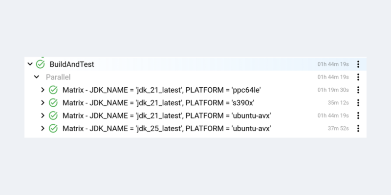

A stable and fast CI is not a goal in itself: it is what allows the project to support a higher throughput of new features and CVE fixes. The faster and the more reliable the feedback, the more changes can be reviewed, merged and backported to the maintained branches, and the sooner security fixes reach the users. This article shares what we did to get there.
Where we were a year ago
A year ago, the Camel Core CI on Jenkins was producing between one and four fully green builds per year, i.e. with the whole test matrix succeeding at the same time. The build was taking almost 6 hours when things were going fine.
The number of flaky tests was very high, which caused committers to stop really looking at failures and to just wait for the next build, hoping that the failure was a flaky test. And when it was not, it meant searching through a larger set of commits, because for resource constraints we did not keep the whole build history.
At the same time, the workload kept growing:
- more backports to the LTS branches
| Year | Backport PRs merged | Per branch |
|---|---|---|
| 2024 | 160 | 4.4.x: 58, 4.8.x: 57, 4.0.x: 18, 3.22.x: 14, 3.21.x: 7, 3.x: 5, 4.3.x: 1 |
| 2025 | 164 | 4.10.x: 82, 4.14.x: 48, 4.8.x: 30, 4.4.x: 2, 4.16.x: 1, 3.22.x: 1 |
| 2026 (to 23 Oct) | 820 | 4.18.x: 415, 4.22.x: 259, 4.14.x: 141, 4.10.x: 3, 4.17.x: 1, 3.22.x: 1 |
- more pull requests and more changes in general, several of them with reviews mostly automated
| Year | PRs merged on main |
|---|---|
| 2024 | 3,610 |
| 2025 | 3,326 |
| 2026 (to 23 Oct) | 6,097 |
On top of that, we started hitting the GitHub Actions limits, which are shared among the whole Apache GitHub organization. The queue time can go up to dozens of hours on worst days, regularly dozens of minutes. On a 30-minute job, that is quite significant and slows down the development process.
It was time to give a bit more love to our CIs. The focus was first on Jenkins, but several actions benefitted both of them. This is ongoing work, but let’s share some of the results of the improvements today, as we recently reached an important milestone on Jenkins CI.
High-level figures: before and after
Let’s start with a high-level comparison of the improvements:
| Metric | A year ago | Today |
|---|---|---|
| Green Jenkins builds on main | 1 to 4 per year | several per day |
| Duration of the Jenkins build for main | 5h45 | 1h24 |
| Duration of the Jenkins build for 3 streams in parallel | between 15h and 24h | 6h |
| Theoretical duration of the Jenkins build for 3 streams in parallel when oldest maintenance stream will be 4.24 | between 15h and 24h | 1h24 |
| Duration of a small PR build (GitHub Actions) | 35 minutes | 20 minutes |
Worth noting: despite the huge increase of triggered PR builds, the global time consumed on the GitHub Actions runners only had a contained increase, thanks to the improvements described below.
How we improved stability
Categories of issues
Most of the stability improvements were related to these categories:
- Port conflicts for services used for testing.
- Shared system collision: beware of clearing all contents in tear-downs, and ensure that different names/paths are used.
- Camel URI collision: either route ids or endpoints were colliding. A good habit is to provide a specific, unique id for each Camel route, and specific names for the Camel URI endpoints (for instance
direct:,seda:ormock:names, or the directory of afile:endpoint) used by each test. It avoids potential interactions between tests when they are run in parallel. When an interaction still happens, it also gives a better error message, as the colliding route or endpoint is clearly identified. Thread.sleepusage- Lack of synchronization between expected state of the system and next steps in the test
Some generic solutions:
- Use
@Isolated: this is often the easy solution, at the cost of performance. - Increase the timeout. Beware: it is often the first solution that AI agents provide, and it does not work that often. Check first whether the test is close to the timeout when passing. Otherwise it is usually another problem, and a longer timeout will only increase the time before the test fails.
- Use more conditional checks with
Awaitilityto ensure that systems are ready, or that what we want to test is in the expected state
Develocity to identify flaky tests
The Apache Software Foundation has a Develocity instance available. To identify flaky tests, there is a very convenient dashboard.

Automatic rerun of failing tests
A lot of the flakiness is worked around by rerunning the test immediately in the same build. It slows down the build and can hide a few real issues, but overall it really helped to move forward. For instance, the Jenkins build runs Maven with -Dsurefire.rerunFailingTestsCount=2 -Dfailsafe.rerunFailingTestsCount=1.
The reruns with at least one success are reported as success. We can monitor the flaky tests in Develocity.
Cleaning the Jenkins Nodes
Leftovers from previous builds on the Jenkins agents were another source of unreliable results. Several failures were due to running out of disk space or to a very slow system when writing on disk. Thresholds limited these behaviors, but it meant that fewer Jenkins runners were available once the limit was hit, until someone noticed it and cleaned the Jenkins node. We cleared hundreds of gigabytes on most of the Jenkins nodes: the Docker image and volume caches, .m2 snapshots and old workspaces which had failed to be removed.
We now:
- clean the workspace before each build (
cleanWs()), and remove the previously installedorg/apache/camelartifacts from the local Maven repository so a build never picks up stale snapshots, - clean the workspace after the build when it succeeds. In case of failure, we keep it for 5 builds to leave time to investigate,
- limit the history of kept builds and artifacts (
buildDiscarderlog rotation) so that old workspaces and artifacts do not accumulate on the agents.
How we reduced the build time
Parallel builds with -T1C
The first step was to use the Maven -T1C option (one thread per CPU core). A first iteration targeted mostly the compilation and deployment parts, as they were working almost out of the box. A second iteration focused on the tests part. This one was trickier: several tests (and also some runtime code) were not robust enough.
Improvements are more impressive on Jenkins given that we have between 8 and 24 CPUs available, compared to 4 on GitHub Actions.
Let’s see the nice results:
For deployment on Jenkins:
| Project | Without -T1C (before) | With -T1C |
|---|---|---|
| Camel Core | 2h35 | 25min |
| Camel Spring Boot | 1h20 | 15min |
| Camel Quarkus | 3h | 17min |
For Camel Core build and test on Jenkins:
| Jenkins node | Without -T1C (before) | With -T1C |
|---|---|---|
| ppc64le | 5h 45min | 1h 41min |
| s390x | 2h 24min | 48min |
| x86_64 with Sonar | 5h 20min | 1h 47min |
| x86_64 without Sonar | 4h 09min | 56min |
We can notice a better leverage of the CPUs:
before:

after:

For the check step of the regeneration script (etc/scripts/regen.sh):
| Environment | Without -T1C (before) | With -T1C |
|---|---|---|
| GitHub Actions | 15min30sec | 9min |
| Local with 22 Cores | 4min45s | 1min10s |
Note: Maven Daemon (
mvnd) also provides multi-core Maven builds and could improve log readability. We discarded it as an initial step to avoid the maintenance cost of an additional dependency, and because the current logs are readable enough.
Stricter constraints on stability
Running in parallel with -T1C raised the bar on the previous stability points. Tests that used to be merely “flaky” (i.e. which were flaky but finally passing on CI thanks to the rerun parameters) tended to fail regularly once run in parallel, which forced us to fix them instead of tolerating them.
Reducing the test matrix
The Jenkins build runs a matrix of JDK versions and platforms, and each cell costs a full build and test run on a limited number of agents. As a first iteration, we reduced it by removing JDK 21 from the maintenance streams: they are already built with JDK 17 and JDK 25, and JDK 21 is still built by Jenkins on the main branch. The same reduction was applied to the GitHub Actions workflows, where JDK 21 was removed too:
- the pull request build (
pr-build-main.yml) was then running with JDK 17 and 25, - the build of the
mainbranch (main-build.yml) was then running with JDK 25 only.
Fewer builds in the matrix means less load on the agents and on the GitHub Actions quota shared with the other Apache projects, and a faster overall result.
The good news is that with Camel 4.24 upcoming, JDK 17 has been dropped. It means one less JDK to test!
We also made JDK 25 on-demand for pull requests in the GitHub Actions workflows, to reduce the load even further. Given that we now get much faster feedback for JDK 25 from Jenkins after the parallelization activation, we considered it an acceptable tradeoff for now.
Removing and deprecating components
Less code to build and test means a faster build. Two actions help here:
- Removing deprecated components reduces the size of the code base, and so the compilation and test time as well as the size of the produced artifacts.
- Deprecating outdated components, when their dependencies are not updated anymore, reduces the load on the CI and also the security risk: a component relying on dependencies which do not receive updates anymore will accumulate known vulnerabilities.
Scope modules to be tested on each PR
There is a mechanism in place to build and compile only modules which depend on the modified code on each PR. It reduces the number of tests that need to be run. This has been in place for several years, but it benefitted from several improvements over that time to be more accurate.
Avoiding full git clones
Cloning the whole history on every build is wasted time and bandwidth, especially for a repository of the size (and age) of Camel. For instance, on GitHub Actions it was taking 5 minutes, compared to 17 seconds with a clone of limited depth and only the specific branch. That is an easy improvement. The Jenkins build now uses a shallow clone (depth 1, without tags) for every cell of the matrix. The single exception is JDK 21 on the ubuntu-avx agent: it needs the full history so that the Sonar analysis can report the date on which an issue was introduced.
GitHub Actions: ubuntu-slim, cancellation policy and push branches
Cancellation policy. The pull request build uses a concurrency group per pull request with cancel-in-progress: true: when new commits are pushed, the build that is still running for the previous ones is cancelled instead of wasting runners. The build of the main branch has cancel-in-progress: false, so every commit on main is built and gives a result that can be matched to a commit. Here is a little script to scan a repository or an organization which is missing this config.
ubuntu-slim runners. The short workflows (less than 15 minutes) run on the lighter ubuntu-slim runners instead of ubuntu-latest, see this commit. The full Maven builds (pr-build-main.yml and main-build.yml) stay on ubuntu-latest, as they need the resources of a standard runner. It puts the build on another queue and reduces the time to switch from one job to another.
Push branch configuration. It is important to explicitly specify which branches get a build on push. It avoids building the same commit twice for branches created on the same repository and pushed as a PR. Note that Dependabot PRs fall into this category by default. I tried to provide this improvement to all the active projects for which it was missing. Here is a little script to scan a repository or an organization which is missing this config.
Fix Jenkins leased node bug
To avoid clashes between Camel builds, we forbid running them on the same node at the same time. Due to a Jenkins bug, the ppc64le and s390x nodes are not requested to start. It causes our jobs on these architectures to run serially. It can take up to 24 hours to finish all the jobs. This is currently the biggest bottleneck when I do not trigger the manual workaround. A pull request, jenkins#27365, is awaiting review. If you have knowledge or connection with Jenkins team, please help to improve this point. A workaround consists in triggering dummy jobs to fill the executor queue of the Jenkins node so that the other nodes start and get picked up.
Develocity to spot critical path in Maven build
Develocity also provides build scans with interesting information on the timeline and the resources used. It allowed us to spot several candidates for improvement in the critical path of the Maven build, and helped to direct the investigation of the next improvements described.
Compilation of generic Map.entries
This one is a bit technical but it was one of the most unexpected findings. The compilation of one relatively small module, camel-util, was taking several dozen seconds, and even several minutes on ppc64le. I spotted that it was part of the critical path, so I decided to take a look. It was due to a single class with 400 lines of static Map initialization. The problem was that it relied on generics, and the compiler seems to use a non-linear algorithm to infer every nested generic Map.entry call together with the outer call. By just specifying the type witness, it went back to a second!
Before:
private static final Map<String, String> COMPONENTS = Map.ofEntries(
Map.entry("a2a", "camel-a2a"),
[...]
);After:
private static final Map<String, String> COMPONENTS = Map.ofEntries(
Map.<String, String> entry("a2a", "camel-a2a"),
[...]
);| Jenkins node | default-compile before | default-compile after | Gain (default-compile + recompile) |
|---|---|---|---|
| Ubuntu x86_64 | 36s | 1s | 1m10s |
| ppc64le | 3m56s | 1.7s | 7m48s |
| s390x | 41s | 0.8s | 1m20s |
See CAMEL-25963 for more details.
Activating JUnit test parallelization
Not all modules have JUnit test parallelization activated. For the ones on the critical paths and not running at the same time as too many other modules, it is worth activating it to benefit from all the available CPUs.
For instance, for camel-jbang-core, we noticed that it was running alone and that its tests were taking 18 minutes:

By activating JUnit parallelization with this commit and caching catalog, we gained 15 minutes!

Note: there are two types of test parallelization: using forks (several JVMs running test classes) and using JUnit parallelization (several threads in the same JVM). It was important to test various combinations, including one on a machine with 22 cores and one limited to only 4 cores (using
taskset), to find the best compromise. We need a good fit both on Jenkins and on GitHub Actions, which have very different configurations. For a deeper look, see the official documentation of JUnit parallel execution and of the Maven Surefire fork options and parallel execution.
Faster shutdown of embedded servers in tests
Some slow tests are not slow because of what they test but because of how they clean up. A good example is the camel-http module: its “build and test” step was taking about 5 minutes on CI and was on the critical path, while the CPU was close to 100% as many other modules were built in parallel.
Profiling the surefire reports showed that around 255 of the 274 seconds of the module tests (run sequentially locally) were coming from only five OAuth2 test classes, every other class was taking less than 1 second. The root cause was the shutdown of the embedded test servers: HttpServer.close() from Apache HttpComponents (httpcore5) defaults to CloseMode.GRACEFUL, which waits up to 5 seconds for the open keep-alive connections to terminate. Each test closes one or two embedded servers, so each of them was paying 5 to 10 seconds.
The fix, in PR #29574 (test code only):
- close the embedded servers with
CloseMode.IMMEDIATE, through a small null-safe helper in the base test class. The tests still close the token endpoint before the second request, so they still verify that a cached token is reused or requested again. - replace fixed waits by conditional waits, which are also more robust on a loaded CI machine than shorter sleeps: a
CountDownLatchinstead of a timed delay in the handlers, and Awaitility instead ofThread.sleep.
| Before | After | |
|---|---|---|
camel-http module tests (sequential, local) | ~274s | ~19s |
JUnit parallelization was also implemented and measured for this module, but once the shutdown is fixed it only saves around 6 seconds locally and less on a saturated CI. It was dropped to avoid the extra risk from shared JVM state.
The lesson: when a module is on the critical path, look at the surefire reports to find which test classes are consuming the time. A handful of classes are often responsible for most of it, and the cause can be in the cleanup. Other modules using embedded servers may benefit from the same kind of fix.
Shorter SEDA polling time in tests
Another cleanup cost found in camel-spring-xml (1186 tests): a seda consumer blocks in queue.poll(pollTimeout), with a default pollTimeout of 1000 ms, and stopping a CamelContext waits for the consumer thread to leave that poll. A test stopping a context with several seda routes was then spending up to a second per route in its shutdown, for instance about 3 seconds for the shutdown of the context of SpringDelayerTest, whose test bodies take about 2 seconds.
ContextTestSupport and SpringTestSupport were already reducing the default poll timeout of the seda component to 10 ms, but it was not effective for the tests creating their context from a Spring XML: the context is started when the Spring context is refreshed, so the seda endpoints are created, with the default of 1000 ms, before the test support class can configure the component. The fix was done in steps, all of them on test code only:
- PR #29518: set the poll timeout to 10 ms in
SpringTestHelper, which is used by 356 test classes. - PR #29553: register in the test resources a
sedacomponent whose default poll timeout is 10 ms, so it is in place when the endpoints are created, whatever the way the context is started. This reaches the ~186 tests extendingSpringTestSupport.
This change was combined with other ones for this module: tests made safe to run in parallel in the same JVM (PR #29515) and test classes run in parallel in one fork (PR #28303).
The overall result on Jenkins, as reported in CAMEL-25891:
| Before | After | |
|---|---|---|
Tests of camel-spring-xml on Jenkins | 2min 25s | 43s |
It is an improvement of about 70% for the tests of this module. For the global Jenkins job, which lasts around 40 minutes, it is close to a 5% improvement. We can also notice a better usage of the CPUs during the build.
The remaining slow shutdowns are mostly on the 1 second wait loop of DefaultShutdownStrategy when an exchange is still in flight at the stop.
What’s next
- (Re)activate test parallelization for some modules where it was disabled. Can be both from Maven JUnit config or with
@Isolatedor even@OrderJUnit annotations. - Tweak test parallelization with the best number of threads and forks.
- Investigate/improve Sonar which is not leveraging parallelization or multi-core CPUs at all. Currently adding 30 minutes to our 1h25 build with Sonar.
- Investigate build and test time of modules on critical paths. A critical path analysis based on Develocity build scans lists the most interesting candidates.
- Investigate other Camel projects
- Apply new recommendation policies for GitHub Workflows which are emerging in Apache community, for instance from discussions in Slack channel #project-workflow-optimizations (ASF Slack, requires an Apache account or an invitation)
- Leverage the new CI usage dashboard to monitor the usage of our jobs and to spot the ones consuming the most shared resources
Thanks
I would like to thank:
- Apache Camel committers, who supported my recurring rant about the not green CI for quite some time.
- Apache Infra team for the Jenkins cleanup
- Apache committers and Apache Infra team who helped to investigate and propose ideas to improve the state on GitHub shared pool of runners